AmneziaVPN установлена — теперь ей нужен адрес. Сегодня арендуем сервер в Нидерландах, получаем данные и связываем с программой. На выходе — собственный VPN со статичным IP, через который Claude будет видеть вас как европейского пользователя.
AmneziaVPN без сервера — это корпус без двигателя. Программа умеет создавать зашифрованный туннель, но ей нужен «другой конец»: компьютер в нужной стране, через который пойдёт трафик. Таким компьютером и станет VPS.
Понадобится: установленный AmneziaVPN из урока 1, рабочая почта, телефон с банковским приложением для оплаты через СБП.
В меню найдите раздел с продуктами и выберите Amnezia Hosting — это сервис аренды серверов.
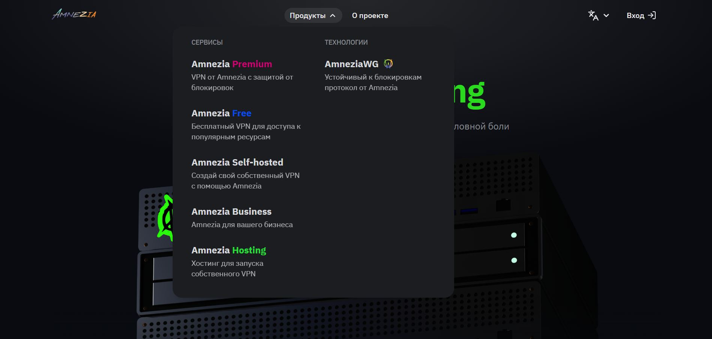
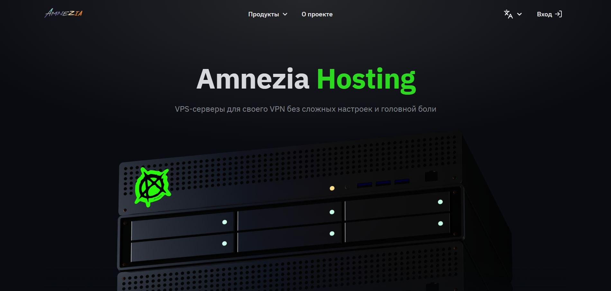
На главной хостинга нажмите «Вход» → выберите «Create Account». Заполните имя, фамилию, почту, телефон, страну и пароль.
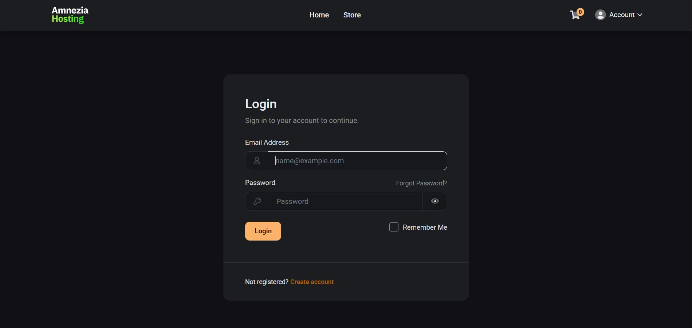
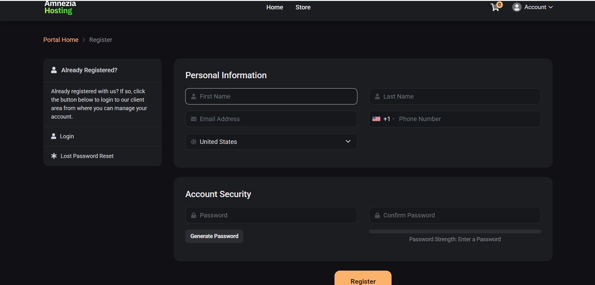
На почту придёт письмо — подтвердите сразу, не откладывая. Без подтверждения аккаунт останется заблокированным.
В личном кабинете найдите этот раздел.
Там будет один вариант — этого достаточно. Мощности хватит с запасом для наших целей.
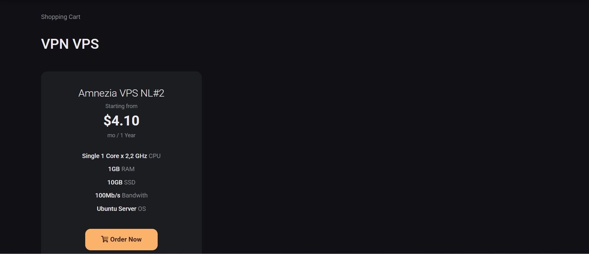
Для первого раза достаточно. Длинные периоды дешевле в пересчёте на месяц, но сначала лучше убедиться, что всё работает.
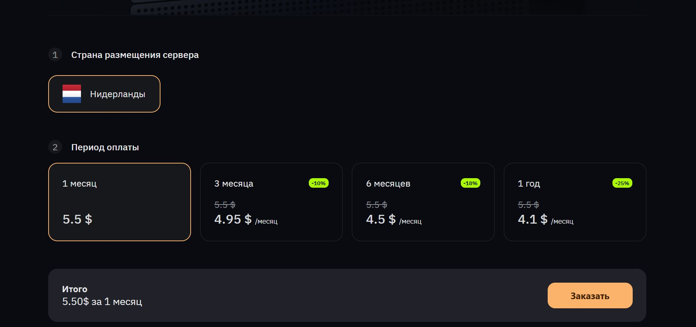
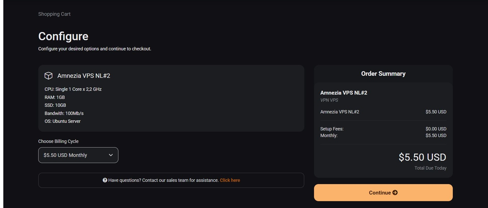
Оплата идёт через систему быстрых платежей. С телефона это займёт меньше минуты.
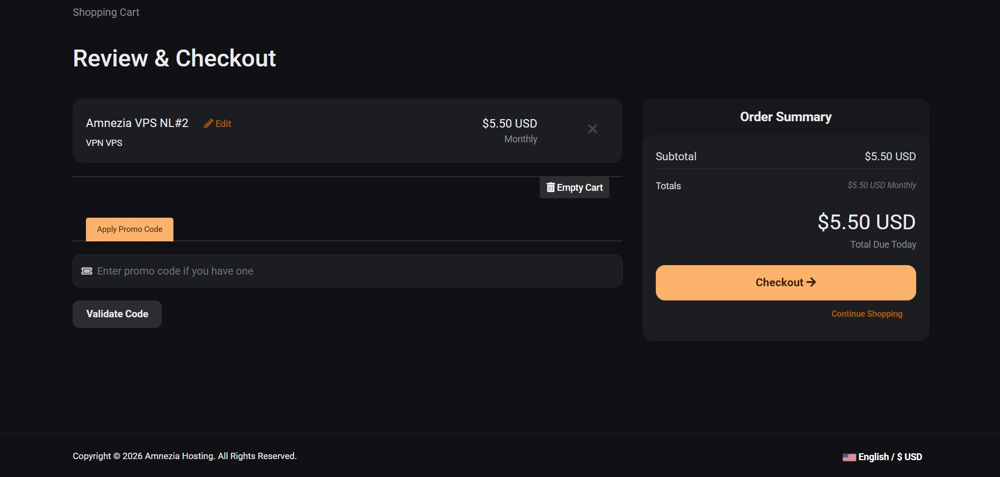
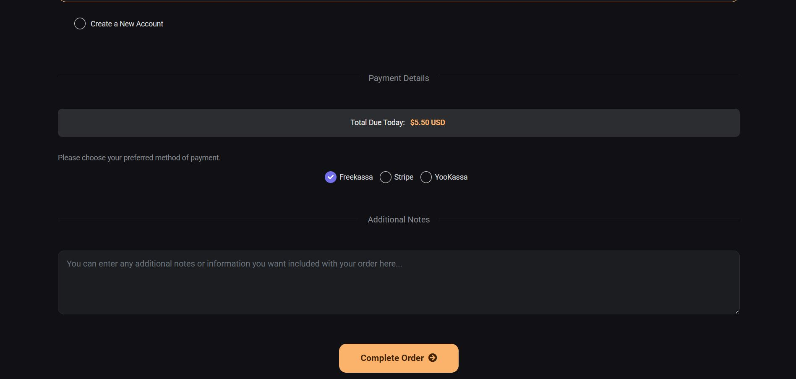
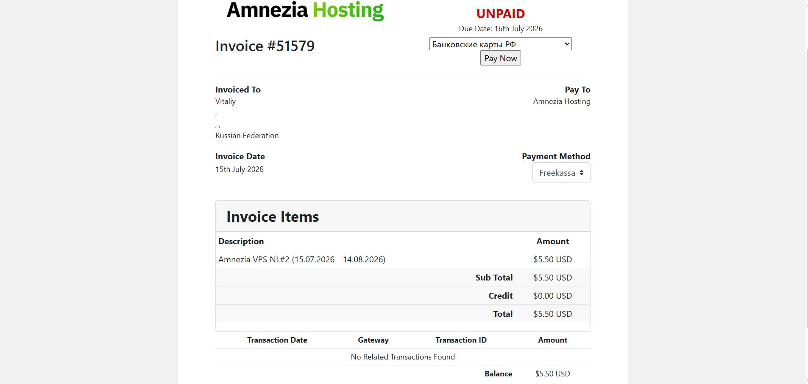
Откройте банковское приложение → «Оплата по QR» → наведите камеру на QR на экране компьютера → подтвердите платёж.
Страница вернётся к обычному виду автоматически. Торопиться и обновлять раньше времени не нужно.
После оплаты откройте раздел «My Services» — там появится активный заказ. Внутри заказа будут три значения:
| Параметр | Что это | Пример |
|---|---|---|
| IP-адрес | Адрес вашего сервера в интернете | 46.102.237.198 |
| Username | Имя пользователя — всегда одинаковое | root |
| Password | Пароль от сервера — сгенерирован автоматически | Скрыт |
Там будет несколько вариантов. Нужен именно Self-hosted — это единственный вариант, который работает с вашим сервером, а не с чужим.
IP-адрес, логин root, пароль из раздела My Services. Нажимаем «Продолжить».
Приложение само развернёт VPN на сервере. Процесс занимает до 5 минут — в это время ничего не закрывайте.
Это значит, что установка прошла успешно.
Индикатор станет оранжевым с надписью «Подключено». Приложение можно свернуть, но не закрывать — оно должно работать в фоне постоянно.
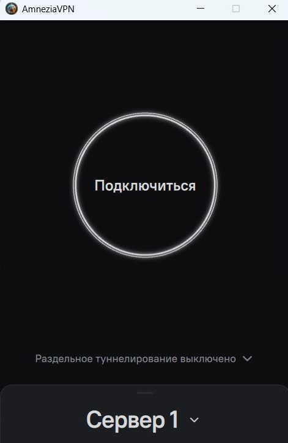
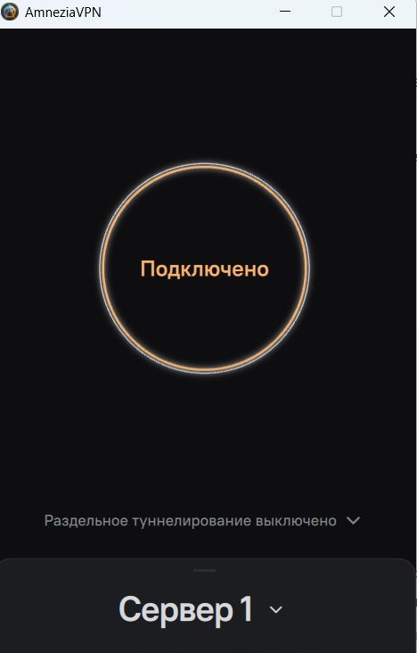
Откройте новую вкладку и зайдите на 2ip.ru или whatismyip.com. Должно показать Амстердам, Нидерланды и IP, совпадающий с тем, что вы сохранили в Части 4.
| Симптом | Что делать |
|---|---|
| Оплата прошла, но заказ не появился | Подождите 5–10 минут — данные обновляются с задержкой. Если через 15 мин заказа нет — напишите в поддержку хостинга через чат, приложив скриншот оплаты. |
| При настройке Self-hosted VPN вылетает ошибка | Закройте AmneziaVPN через трей, откройте заново, повторите шаги подключения — почти всегда помогает со второго раза. |
| Сервер настроен, но подключение не идёт | Проверьте, что все прочие VPN и расширения отключены — это причина №1. Если не помогло — перезапустите приложение или компьютер. |
| Подключился, но IP не поменялся | Отключите VPN-расширения в браузере и очистите кэш, затем проверьте снова. |
| Не получается отсканировать QR при оплате | Используйте ссылку на оплату — она обычно есть рядом на той же странице. |
🎉 Технический фундамент готов на 90%. Остался один короткий урок — и переходим к настоящему делу: сайтам и приложениям.